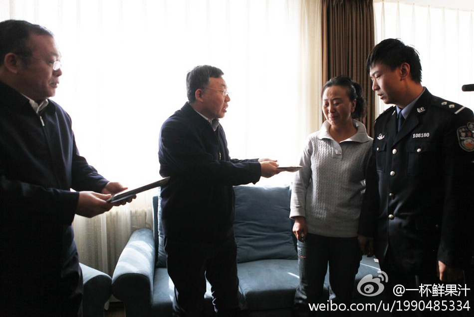

死得其所啊~我就说这帮人迟早得遭报应的。。@一杯鲜果汁:【沈阳一巡警大队中队长牺牲在十八大安保一线】任长林同志牺牲前任沈阳市公安局铁西分局巡警大队案审中队中队长，10月29日11时30分许，连续工作20余小时的任长林同志在工作中突发心脏病，经抢救无效，因公牺牲在十八大安保工作第一线。 网页链接 
《与猫咪一起长大》：说起童年，真的有说不完的故事，但是再加上一只猫，那我们的童年绝对是难忘的，想像这么一只胖胖的黄猫，她整天懒洋洋的，爱在太阳底下打呼噜，爱画画，爱看书，爱拍照，爱装傻，她好像还会抓老鼠，不过我觉得她胖得走不动路了，怎么可能跑得过那些贼一样的鼠小子。